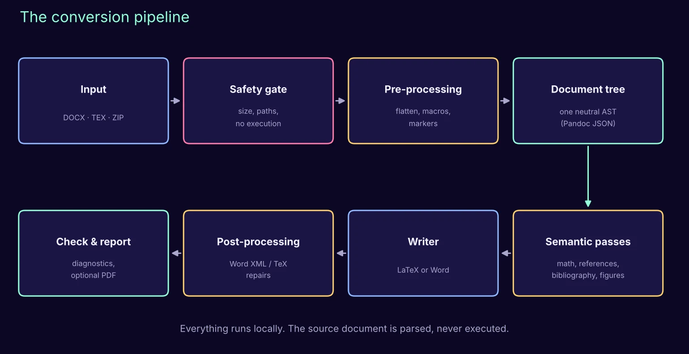
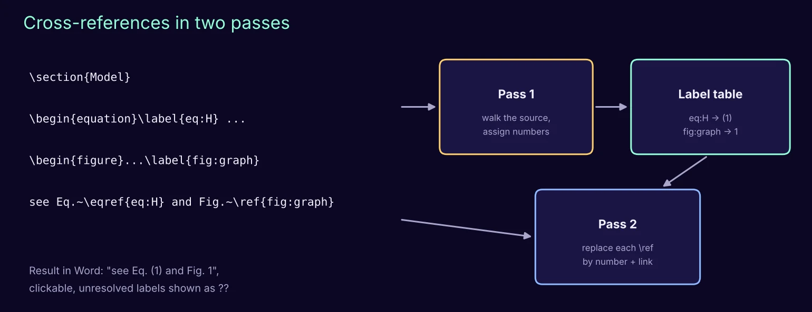
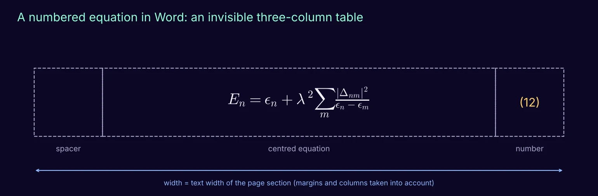
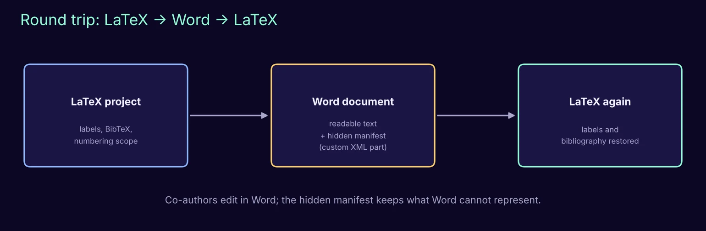
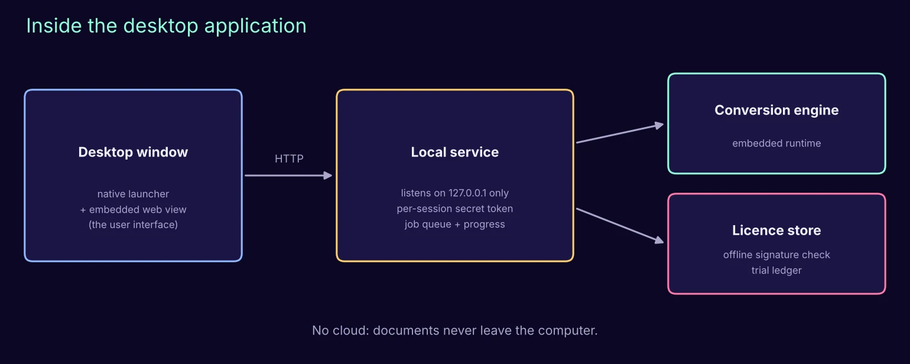

How to build a Word ⇄ LaTeX converter: the design of DeepQ Manuscript
The architecture and the algorithms behind DeepQ Manuscript, explained step by step with figures and pseudocode. Free to read, reuse and build upon.
Dieser Artikel ist auf Englisch verfügbar.

Scientists write in two worlds. Many collaborators, journals and funding agencies expect Word; most physicists and mathematicians write in LaTeX. Moving a manuscript between the two by hand means retyping equations, renumbering references and rebuilding the bibliography. DeepQ Manuscript automates this, in both directions. In this article we describe how it is built, so that anyone can understand, reproduce or improve the approach. We show the architecture and the algorithms; we do not publish source code.
1. Why naive conversion fails
A document is more than its text. The hard parts are the semantics that the two formats store very differently:
| Element | LaTeX | Word |
|---|---|---|
| Equations | TeX source, user macros (\newcommand) | Office Math (OMML) objects |
| Numbering | computed at compile time from \label | fields, bookmarks, or plain typed numbers |
| References | \ref, \eqref, \cite | REF and citation fields, or plain text |
| Bibliography | BibTeX database | source records in a hidden XML part |
| Project | many files (\input, figures) | one container (DOCX = ZIP of XML) |
A good converter must therefore understand the document, not just copy text. Our design rests on four principles:
- Local first. Manuscripts are confidential before publication. Everything runs on the user's computer; no cloud.
- Parse, never execute. A LaTeX file is a program. We read it as data and never run it during conversion.
- One neutral representation. Both directions go through the same document tree, so every improvement helps both ways.
- Honest output. When something cannot be converted safely, keep it visible and report it, rather than silently dropping it.
2. The pipeline

The central object is a document tree (an abstract syntax tree, AST): headings, paragraphs, equations, figures, tables, citations and links as typed nodes. We use the open-source universal document converter Pandoc to read a source into this tree and to write the tree into the target format. Our own work lives around it: preparing the input so that nothing is lost on the way in, enriching the tree with semantics, and repairing the output so that it behaves like a document written by hand.
Algorithm 1 · Conversion
input source file S, options O
output converted document T, report R
check S with the safety gate # Algorithm 2
if S is a Word file:
plant markers for captions, bookmarks, fields # Algorithm 6
else: # LaTeX file or project
flatten the project into one source # Algorithm 3
collect user math macros
build the cross-reference plan # Algorithm 4
tree ← parse(S) # sandboxed, no execution
apply semantic passes to tree: math, references, bibliography, figures
T ← write(tree)
repair T in its native format # Algorithms 5 and 7
R ← quality checks (+ optional PDF build)
return T, R
3. The safety gate
Word files and LaTeX projects arrive as ZIP archives, and ZIP archives can be hostile: a tiny file that expands to gigabytes, or entries that try to write outside the working folder.
Algorithm 2 · Safe archive
reject if file size > 30 MB
for each entry e in the archive:
reject if total expanded size > 100 MB or number of entries > 1000
reject if path(e) is absolute, contains "..", a drive letter or a backslash
reject if e is a symbolic link
extract into a fresh private working folder
Parsing then runs in a sandbox mode that forbids reading or writing files the parser was not explicitly given, with a time limit. When a PDF is requested, the LaTeX compiler runs with shell escape disabled.
4. LaTeX to Word
Flattening. Real projects split the text into chapters with \input and \include. We merge them into one source, but only inside the project folder, with a size budget and protection against files that include each other in a loop. Commands that could read or write files, or run programs, are refused.
Algorithm 3 · Flatten a project
flatten(file f, visited V, budget B):
if f ∈ V or f is outside the project root: stop (cycle or escape)
if |V| > 30: stop (nesting too deep)
text ← read(f); B ← B − size(text); if B < 0: stop
remove comments
reject primitives that touch files or run commands
(\write18, \openout, \read, \directlua, \catcode, ...)
for each \input{g} or \include{g} in text:
replace it by flatten(g, V ∪ {f}, B)
check that every \includegraphics path stays inside the project
return text
Cross-references. LaTeX numbers equations, figures and sections only when it compiles. Word has no compiler, so we compute the numbers ourselves, in two passes, for a chosen numbering scope (continuous, per chapter, per section).

Algorithm 4 · Cross-references
# pass 1
counters ← 0 for sections, equations, figures, tables
walk the source in reading order:
on a heading at depth d: increment its counter, reset deeper ones
(and the equation counter if the scope says so)
on a numbered equation, figure or table: increment its counter
on \label{k}: table[k] ← (kind, current number, anchor)
# pass 2
for each \ref{k}, \eqref{k}, \autoref{k}:
if k ∈ table: replace by its number (in parentheses for \eqref) + link
else: write "??" and list k in the report
Mathematics. Each equation is converted to Office Math. Before that, user macros are expanded (with a depth limit, so a recursive macro cannot hang the program) and unusual environments are mapped to standard ones. If an equation still cannot be converted, it is not dropped: it stays in the Word file as clearly marked LaTeX text, and a file EQUATIONS_TO_REVIEW lists each one with the reason. This "graceful degradation" is what makes the tool trustworthy on real manuscripts.
Numbered equations in Word. Word has no built-in equivalent of a centred equation with its number on the right margin. We build it from an invisible three-column table whose width is computed from the page margins and columns of the current section.

Algorithm 5 · Number display equations in Word
for each display equation E in the Word XML:
W ← page width − margins, divided by the number of text columns
n ← its number from the cross-reference table (or the next number)
replace E by a borderless table with column widths
(c, W − 2c, c), c ≈ W/12: [ empty | E centred | "(n)" ]
no borders, no cell margins, row may not split across pages
5. Word to LaTeX
The difficulty in this direction is that the parser keeps the visible text but forgets much of the meaning: which paragraph is a caption, which bookmark a reference points to, which citation field belongs to which source. We solve this with markers.
Algorithm 6 · Recover Word semantics with markers
P ← a random prefix (so markers cannot collide with real text)
for each caption, bookmark, REF field, citation field in the Word XML:
insert an invisible text marker P+id before it
record id → {kind, label, field instruction, source key}
tree ← parse(modified Word file)
for each marker found in the tree:
look up its record and rewrite the node:
caption → figure or table caption + \label
bookmark → \label on the heading or equation
REF field → \ref or \eqref
citation → \cite{key}
remove all markers; report any that could not be resolved
bibliography ← Word source records converted to a BibTeX file
Word's own bibliography list is removed when its source records are available, because those records are the authoritative data; otherwise the list would appear twice.
6. The round trip
A frequent workflow: the author writes in LaTeX, a co-author comments in Word, and the text comes back to LaTeX. Some LaTeX information has no place in Word (label names, BibTeX entries, the numbering scope). We store it in a small hidden manifest inside the Word file (a custom XML part, which Word preserves when the document is edited). When the file is converted back, the manifest restores labels and bibliography.

7. Figures and the optional PDF
- Single-page PDF figures, common in LaTeX, are rendered as images at up to 300 dpi for Word.
- In the other direction, images can be exported as PNG, JPEG or PDF; PDF output embeds the pixels losslessly (it does not invent vector graphics, and the report says so).
- On request, the exported LaTeX project is compiled to PDF (several compiler passes plus BibTeX). The compiler log is translated into readable diagnostics: missing packages, undefined references, overfull lines.
Algorithm 7 · Quality report
R.counts ← equations, figures, tables, citations in source and result R.math ← normalised, coloured, numbered, failed equations (with reasons) R.references ← resolved / unresolved labels R.pdf ← compiler passes and parsed diagnostics (if requested) R.warnings ← everything that needs a human look, without duplicates write R as CHECK_REPORT.txt and report.json next to the result
The report explicitly states what the checks do not guarantee: they detect structural problems and compiler messages, but they are not a measure of visual or mathematical fidelity. A careful human review remains part of the workflow.
8. The desktop application

- Interface. A small native launcher opens a window with an embedded web view. The interface is ordinary HTML, which makes it easy to design and translate.
- Local service. The engine runs behind a service that only listens on the computer itself (127.0.0.1) and requires a secret token created for each session, so other programs or websites cannot use it.
- Self-contained. The installer ships its own language runtime and converter, so users install nothing else. Every third-party component is downloaded once and verified against a known checksum before it is packaged.
- Licensing without servers. A licence key is a small signed statement. The application contains only the public key and checks the signature offline; the private key never leaves the issuer. The free trial is a local counter of 5 conversions per direction.
9. Limits and lessons
- Legacy equation objects (old Equation Editor, MathType OLE) are not editable math and are reported rather than converted.
- Tracked changes are accepted during conversion; page references are not supported.
- New installers are flagged by Windows SmartScreen until they build a reputation or are code-signed: distribution is part of engineering.
- The most valuable feature turned out to be the report. Users forgive a converter that tells them exactly what to check; they do not forgive one that silently changes their science.
We hope this blueprint helps others build better tools for scientists. If you build on it, we would love to hear about it.